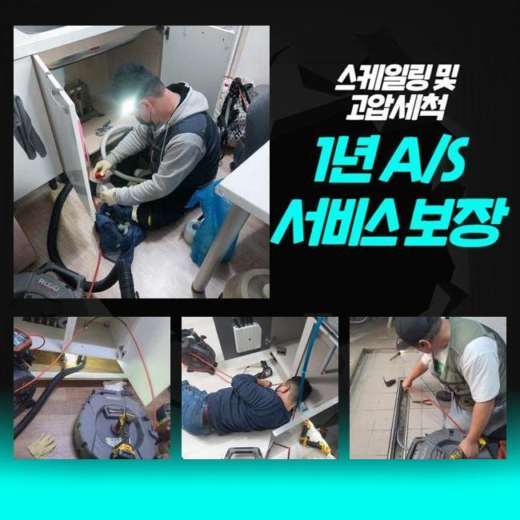
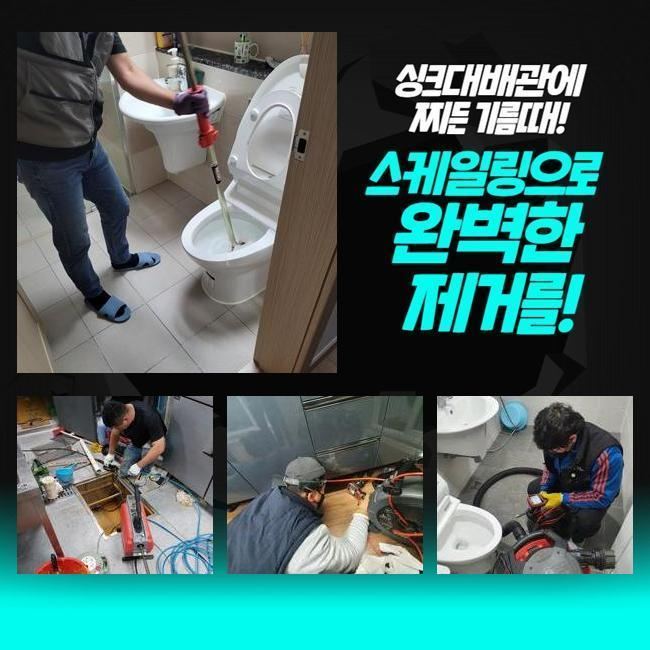
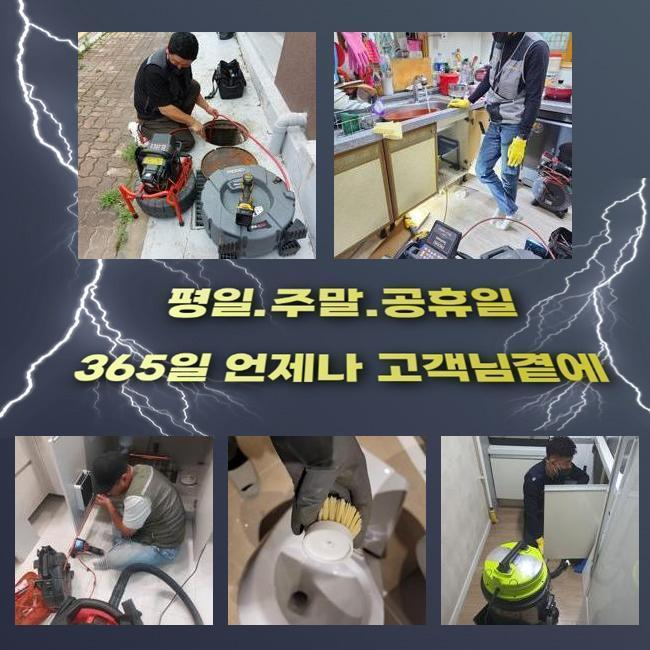
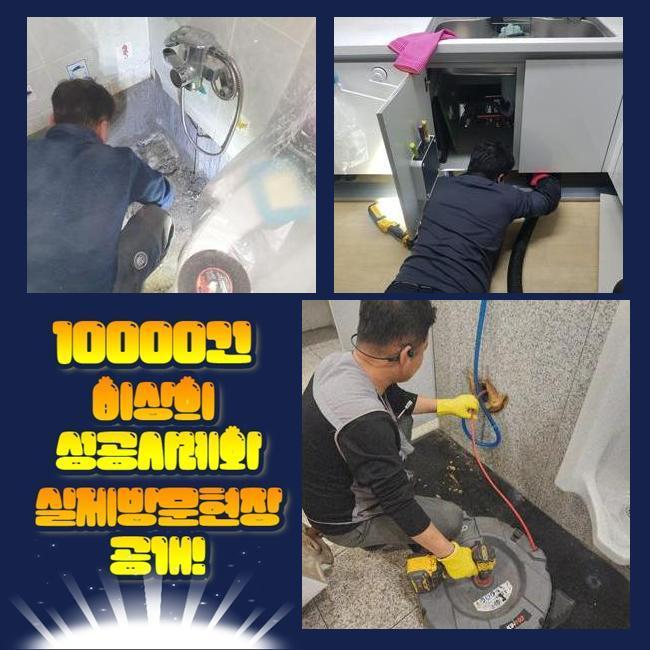

🏠 용인 영덕동대변기막힘 보정동 하수관고압세척 누수
용인 보정동 변기막힘 전문 시공 후기

📋 작업 개요
- 위치: 용인 보정동, 보정동, 용인
- 서비스 유형: 변기막힘, 하수구막힘, 배관막힘, 누수수리, 역류해결, 뚫는업체, 배관청소, 고압세척
- 작업 일시: 2025. 4. 15. 21:31
- 업체명: 하수구수사대 (010-5615-2118)
🔍 문제 상황
용인 영덕동대변기막힘 보정동 하수관고압세척 누수
앞서 의뢰인으로부터 집에서 세면대에 이상이 나타났단 문의를 접수하고 고객님댁에 찾아갔어요
흔히 나타나는 배수정체는 여러 피해를 양산시키고 위생과 관련된 문제들과 물을 못쓰는 사태로 진행되기에 조속한 조치들이 필요하죠
하물며 물이 안내려가는게 방치되어 있을 시 역류등이 나타나 세면대이외에 옆의 배수구에도 트러블을 전가시켜 이용하지못하게끔 제약들이 늘어나게되요
공동라인을 공유하는 건축일이면 정체현상이 시정되지 못할 시 부유하는 세대들이 동시에 피해에 휩싸이기때문에 빠른 대처가 필요하답니다
해당 장소로 도착해 의뢰자가 말씀하시는 내용을 경청하니 세면대쪽에서부터 하수들이 안빠져서 이용할 때 급박한 상황이라는걸 알 수 있었어요
막힌 상태들이 오랜 시간이 지나 냄새까지 심각수준으로 치닫고 여러가지로 힘들어졌다고 합니다
배수불량은 때를 놓치게되면 양상이 나빠지는 경우가 꽤 많기에 초반에 해결해주시는게 중요해요

🔎 원인 분석
💡 전문가 진단: 정밀 진단 장비를 사용하여 슬러지의 고착 여부를 판명하고 타격/세척 작업을 실시했습니다.
고객분이는 셀프조치의 일환으로 집에서 공유하는 용품으로 해결하기위하여 계속해서 시도했지만 이상하리만치 실용적인 개선이 없어서 저희를 불러주신 것이였죠
고객님이 셀프도구들을 이용하여 뚫음을 꾀할땐 그 순간엔 증상들이 해결된듯이 보이겠지만 심층부에 존재하는 잔해들을 뒤탈없이 청소시키진 못해요
똑같이 자가적으로 해결하려다가 잔해들을 배관 끝라인까지 투입시킨다면 의도치않게 증세를 악화시켜요
정체현상의 문제요소를 시정하려면 전문성이 없는 상황에서 무리한 방법들로 뚫음을 진행하는 것은 권장할 수 없는 행동인데요
전문인들의 방법을 수용하시는게 합리적인 해결이라고 생각하시면 됩니다
하수도를 살펴보았더니 안쪽엔 흘러내려가지 못한 여러가지의 이물질들이 누적되어 배수흐름을 정체시킨게 원인으로 파악되었습니다
지금의 형상을 파악하고 문제들을 보다 꼼꼼히 살피고자 내시경기기를 사용하여 세면대쪽의 구간 별 모습들을 점검했죠
내시경기기는 상당부분에 연결된 렌즈를 하수도에 투입시켜 이물질의 양을 인지하는데 빠져서는 안되는 녀석이에요
내시경기기를 때에 맞게 활용하면 구조와 관련된 오류 및 원인들을 특정시켜 효과들을 상승시킬 수 있어요

🔧 작업 과정
내시경렌즈를 운용해 총체적인 점검들을 진행하니 하수도의 꺾이는 구간쪽에 기름기가 상당수 쌓이게되어 통수절차를 막아서고있는 형상을 보았죠
기름으로 말씀드리자면 하수도를 비위생적이게 하고 배수를 불가하게하는 트리거라고 보면 되겠습니다
기간들이 흘러가며 기름성분들은 딱딱하게 굳게되며 증상들을 더욱 심각하게 만듭니다
이 현장에서도 동일하게 잔해들이 굳게되어 악취와 함께 배수불량이 정점이였던 상황이었어요
검수를 마친 후 문제들을 바로잡을 목적으로 스케일링 기기를 꺼내어 벽부분에 고착된 잔해들을 제거했는데요
스케일링의 경우 하수관의 흡착물을 떨어트려주며 배출을 수월케 하는데 큰 도움들이 되죠
더 나아가 배관이 노후되었거나 라인들의 위치가 복잡할 경우엔 장비조작을 조심스럽게 해서 뒤탈없는 수리가 이어질 수 있게 신경써주었어요
일단은 관로의 주요 이물질들을 분쇄해준 후 바로 석션장치를 투입시켜 파쇄된 이물질들을 뒤탈없는 이물제거를 진행시켰어요
이 해결들을 통해 통로들이 원래대로 개선되는것을 체크할 수 있었어요
마무리가 어느정도 되었어도 배관 형상을 계속해서 들여다보면서 이상이 있다면 장치들을 투입해서 관로를 깔끔하게 조치해드려요
증상들이 발생될 여지가 있는 포인트를 되풀이하여 차근차근 체크해주었지만 딱히 증상이 없는 모습을 확인했죠
샤프트 개선을 지속적으로 진행시켜줘도 간단히 물들이 안빠지는 결함을 시정해냈던 현장이였답니다!
세심한 시공으로 골치아팠던 막힘 상태속에서 수월하게 환골탈태하였고 의뢰인분도 세면대 배수 상태들이 나아진걸 확인했답니다
작업에 끝이 보이면 내시경렌즈를 써서 배관 내부 상태들을 검수해봤습니다 구간마다 이물은 제거되었고 배수실정이 빨라진 모습이였어요


✅ 작업 완료
막힘관련 장애는 전문업체에서 어렵지않게 해결할 수 있겠으나 고객님차원에서의 관리해주시는게 요구됩니다
이같은 상황은 언제든지 마주할 수 있는 증상이지만 전문지식이 동반된 방식들로 시정해나간다면 배수관을 장기간 이용하는게 어려운 것이 아니에요
배수 결함에 있어서는 조기에 합리적인 대처를 세우지 않는다면 피해들이 확산될 수 있는 확률들이 다분하기에 문제인것을 목격했다면 전문업체에게 의뢰를 해보시는게 좋답니다
이러한 전문 개선을 통해 막힘 증세들을 실질적으로 개선시키고 걱정할 일 없는 이용 조건을 제공하도록 고객분에게 달려갑니다


⚠️ 베란다 누수 및 방수 관리 방법
- ✅ 비가 많이 올 때 창틀 주변이나 아래층 천장에 얼룩이 생기는지 정기적으로 확인해 보세요.
- ✅ 우수관 주변 실리콘 마감이 들뜨거나 깨진 틈새가 있는지 손상 여부를 수시로 체크하세요.
- ✅ 베란다 바닥 타일의 줄눈(메지)이 소실되면 그 틈으로 물이 침투하여 누수가 유발됩니다.
- ✅ 누수 의심 증상 발견 시 방치하면 아래층 손실이 커지므로 즉시 전문가의 진단을 받으십시오.
💡 핵심 정리
- 확실한 장비 작업(내시경 점검 및 샤프트 스케일링)으로 원인을 뿌리 뽑습니다.
- 작업 후 1년 이내에 동일한 부위 재발 시 100% 무상 A/S 서비스를 보장합니다.
- 서울 · 경기 · 인천 전 지역에 24시간 언제든 긴급 출동할 수 있도록 항시 대기 중입니다.
❓ 자주 묻는 질문 (FAQ)
🚨 용인 보정동 변기막힘 문제로 고민이신가요?
정확한 원인 진단과 확실한 시공으로 재발 없는 해결을 약속드립니다.
24시간 긴급 출동 | 서울 · 경기 · 인천 전지역 | 1년 내 재발 시 무상 A/S